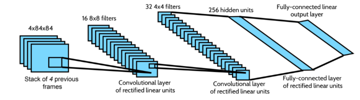
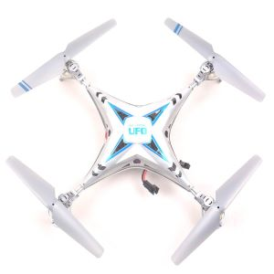
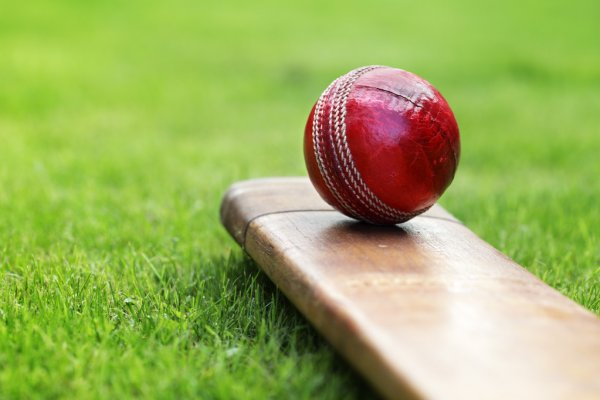
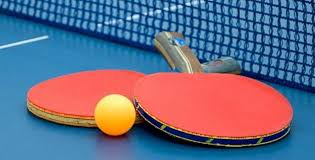
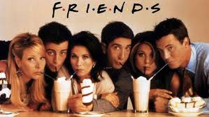

Vanya BK
I am an undergrad at IIT,Madras. I am passionate about coding and making the world a easier place to live in by developing new products. My hobbies include watching sitcoms and playing table tennis.
I started coding since 8th grade when I was taught Java as a part of the ICSE curriculum. Then I learnt C++ in my 11th and 12th. Later when I joined IIT Madras and started getting involved in projects and saw the end results which made lives of so many easier is when I decided I should be doing this for the rest of my life.
Here are some of the projects I have completed
ECONF.AI - Helps organize conferences optimally
I built a recommender system to suggest conferences to users based on the description of the previously attended conferences and the location of the user. I implemented the TF-IDF algorithm to allocate weights to the words and then modeled them in a 2D vector space to find similar words in the description of the conferences using cosine similarity.
Here's the link to the complete project
Bloom Trees
I improved the time taken for the implementation of the Bloom tree by 20 percent(a memory efficient data structure which uses bloom filters to store the graphs) by implementing the common ancestor method which keeps track of the level numbers to find the path between two leaves rather than finding the path between the root and the two leaves and then merging them(done originally).
Reinforcement Learning Project
I implemented Deep-Q networks from scratch using tensorflow for the game breakout
Here's the link to the complete project
Reinforcement Learning Internship
I studied various state-of-the-art research papers on how to control the quad-rotor using reinforcement learning and implemented various reinforcement learning algorithms like Actor Critic methods using natural gradient descent and Proximal Policy methods for various gym environments with discrete action space like CartPole and continuous action space like LunarLanderContinuous which is very similar to the quad-rotor’s environment, and compared their performances.
Here's the link to the complete project
Internship at Microsoft

I worked on keyphrase extraction for employee offers by testing several unsupervised techniques like TextRank method, MultipartiteRank method and customizing them for extraction from webpages. I achieved an improvement of about 17% in precision
Links to my social media profiles
Github LinkedIN GitlabMy Hobbies!!
I love to play cricket and table tennis


Other than that I love watching F.R.I.E.N.D.S for the gazzilionth time😋
